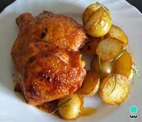

Pollo al horno con papas

Descripcion
Una receta de pollo al horno bien pero bien basica.
Es muy simple de hacer, lo que mas lleva tiempo es la preparacion delos ingredientes
Ingredientes
- Pollo
- Papas
- Romero
- Sal
- Aceite
Pasos
- Poner el pollo en una asadera con aceite
- Poner 4 papas peladas y cortadas al medio, agregar un poco de aceite y sal
- Agregar romero a gusto
- Hornear 45 min, revisando que no se queme cada tanto
- Servir